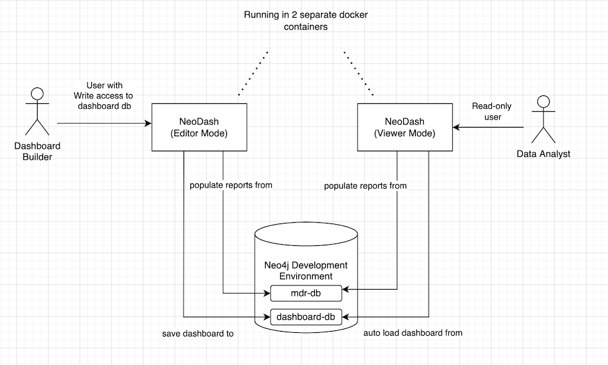

|
This documentation pertains to the (legacy) unsupported version of NeoDash. For users of the supported NeoDash offering, refer to NeoDash commercial. |
Standalone Mode
|
This documentation pertains to the (legacy) unsupported version of NeoDash. For users of the supported NeoDash offering, refer to NeoDash commercial. |
Next to being a dashboard editor, NeoDash can be deployed in a `standalone mode' - allowing you set up a architecture to publish and read dashboards.
Running in standalone modec mode will:
-
Disable all editing options
-
Have a hardcoded Neo4j URL and database name
-
Load a dashboard from Neo4j with a fixed name.
The diagram below illustrates how NeoDash standalone mode can be deployed next to a standard `Editor Mode' instance:

Option 1 - Standard Deployment (Non-Docker)
First, build NeoDash as described here. After
building, you’ll have a dist directory that you can deploy to a web
server.
To configure the app to run in standalone mode, you’ll need to edit
dist/config.json and change the standalone property to true. The
other variables inside config.json should also be configured to match
the hostname, port and database name of your Neo4j instance. See
Configuration for more on configuration variables.
As config.json gets picked up at runtime by the application, users
viewing the application will now access the dashboard in standalone
mode.
Option 2 - Docker Deployment
You can configure the app to run in standalone by passing environment variables to Docker:
docker run -it --rm -p 5005:5005 \
-e ssoEnabled=false \
-e ssoProviders=[] \
-e ssoDiscoveryUrl="https://example.com" \
-e standalone=true \
-e standaloneProtocol="neo4j+s" \
-e standaloneHost="localhost" \
-e standalonePort="7687" \
-e standaloneDatabase="neo4j" \
-e standaloneDashboardName="My Dashboard" \
-e standaloneDashboardDatabase="dashboards" \
-e standaloneDashboardURL="dashboards" \
-e standaloneAllowLoad=false \
-e standaloneLoadFromOtherDatabases=false \
-e standaloneMultiDatabase=false \
-e standaloneDatabaseList="neo4j" \
neo4jlabs/neodash
Make sure that all of the environment variables are set to the correct values. This is described in more detail here.
Alternatively, environment variables from docker compose or a kubernetes deployment can be used.
Deep Linking
To dynamically view a deployed NeoDash dashboard, you can deep-link into a deployed dashboard.
the following deeplinking options are available via URL parameters:
- Appending ?page=1 to the URL will open up a dashboard at a given page. (Starting at zero).
- Appending ?neodash_person_name=Tom to the URL will set a dashboard parameter as a default for the entire dashboard.
Multiple parameters can be used in a deep-link by concatinating them:
https://myneodashdeployment.com/?page=1&neodash_person_name=Tom&neodash_movie_name=The%20Matrix